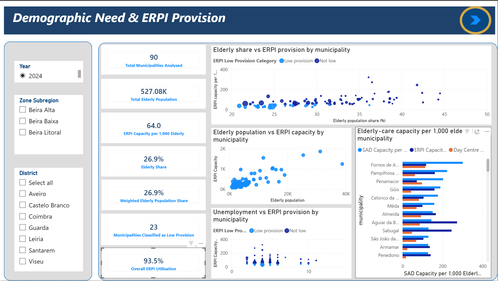
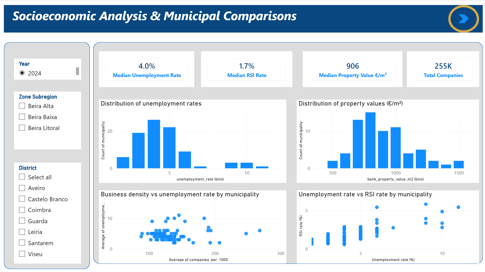

Demographic need
Older population share, ageing index, elderly population and population trends help describe where age-related pressure may be higher.
A transparent screening framework to compare 90 Portuguese municipalities and identify where further investigation of elderly-care services may be warranted.
Power BI · Power Query · DAX · Data governance · Spatial decision support
Conceptual illustration — not project results
An ageing population does not, on its own, prove where a new elderly-care service should open. A useful first step is to compare need, existing provision and local context in a consistent way.
Objective: rank municipalities for more detailed exploration — not claim that any one municipality is already a commercially viable location.
Unit of analysis: one record per municipality, combining demographic, infrastructure and socioeconomic information into a documented analytical dataset.
The model separates underlying need from gaps in current provision. Components are combined in a weighted screening score, with assumptions exposed for review.
Older population share, ageing index, elderly population and population trends help describe where age-related pressure may be higher.
ERPI, day-centre and home-support (SAD) capacity are considered relative to the older population, rather than relying on raw facility counts alone.
Local economic and infrastructure indicators add context to potential need and highlight where feasibility must be examined further.
Built as a repeatable Power Query and Power BI workflow, with governance documents alongside the dashboard.
Integrate public and manually acquired municipality data.
Check keys, ranges, missing values and inconsistencies.
Create ratios, indicators and component scores.
Explore rankings and assumptions in dashboards.
Identify candidates for local feasibility review.
The project documents data acquisition and validation, particularly where some source figures were transcribed manually.
The Power BI report brings together demographic pressure, provision gaps and a candidate shortlist. The intention is to make screening decisions explainable and easy to revisit.
Candidate rankings are sensitive to how indicators are defined, standardised and weighted. Local demand, staffing, transport, competition, operating costs and on-the-ground verification remain important next steps.
Explore the project's real screening overview, including the ranked municipalities, demographic indicators and elderly-care provision measures.

Two complementary report pages show how demographic pressure, care provision and socioeconomic context were explored before making screening decisions.

Examines population ageing alongside residential-care capacity, low-provision classifications and variation between municipalities. Includes the project's ERPI utilisation and weighted elderly population indicators.

Compares unemployment, RSI rates, property values and business density through distributions and relationship charts, adding local context to the screening framework.
These are original, static Power BI screenshots, not interactive reports. The dashboards show analytical indicators; screening results are not a substitute for local feasibility research.